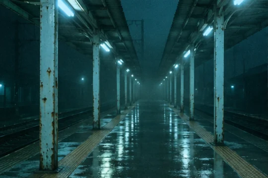
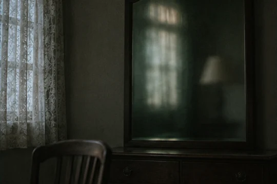
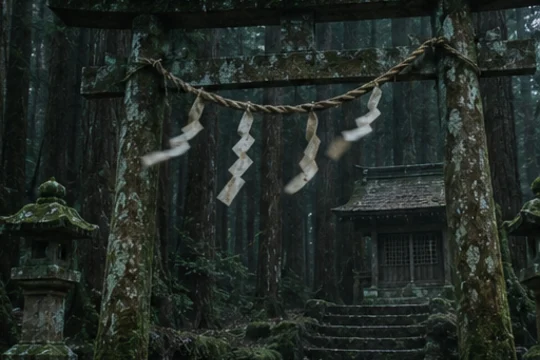
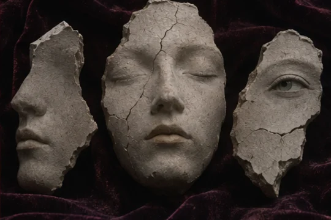
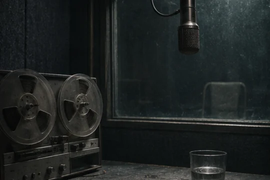

01 / LIMINAL PLACES
Пороговые места
Станции, коридоры, тоннели и пространства между привычными точками мира.
Полевой журнал исследователя ужасов. Здесь собираются мотивы, символы и повторяющиеся образы, которые связывают кино, фольклор и городские легенды.

Станции, коридоры, тоннели и пространства между привычными точками мира.

Как хоррор создаёт ощущение наблюдения, не показывая источник угрозы.

Местные запреты, повторяющиеся предупреждения и истории, меняющиеся от рассказчика к рассказчику.
Шумы, выпадения сигнала, таймкоды и эстетика найденной записи.

Трансформация, двойники, утрата лица и нарушение границ человеческого.

Тишина, далёкие сигналы, механический гул и звук за пределами кадра.